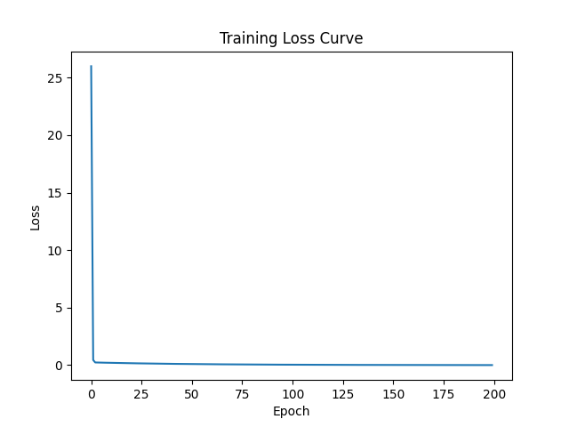

Day 1 - Linear Regression 📈
Built a simple linear regression model using PyTorch and trained it using gradient descent.
What I did
- Implemented y = wx + b from scratch
- Used gradient descent for training
- Tracked loss over epochs
Output
Loss curve visualization:

📂 View Source on GitHub
← Back to Home